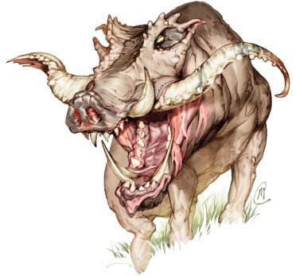

大型动物（跨位面）

| 生命骰： | 12d8+63（112 生命值） |
| 先攻： | +4 |
| 速度： | 40 英尺 |
| 防御等级： | 17（�C1 体型，+8 天生护甲），接触 9，措手不及 17 |
| 基本攻击／擒抱： | +9/+22 |
| 攻击： | 啮咬 +19 近战 |
| 全力攻击： | 啮咬 +19 近战 |
| 伤害： | 啮咬 1d8+13/19�C20 |
| 面宽／触及： | 10 英尺/5 英尺 |
| 特殊攻击： | 冲锋双倍伤害，精通攫抓，狂暴，撕扯 |
| 特殊能力： | 凶猛，昏暗视觉，灵敏嗅觉 |
| 豁免： | 强韧 +13，反射 +8，意志 +6 |
| 属性： | 力量 29，敏捷 10，体质 21，智力 2，感知 15，魅力 10 |
| 技能： | 躲藏 �C4，聆听 +10，侦察 +9 |
| 专长： | 精通重击（啮咬），精通先攻，健壮，追踪，武器专攻（啮咬） |
| 地域： | 任意沿海、温带与暖林（外域） |
| 组织： | 独行或兽群（5�C8） |
| 挑战等级： | 9 |
| 宝物： | 无 |
| 阵营： | 总是中立 |
| 进化： | 13�C26 生命骰（大型）；27�C39 生命骰（超大型） |
狂鳄猪是外域的凶猛猎手。它是物质界凶暴野猪的近亲，但更为坚韧、残暴与致命。狂鳄猪不宣称任何领域为己有，而是四处游荡，追随当下最丰盛的食物来源。
成年狂鳄猪肩高约 5 英尺，肌肉发达的身躯向后倾斜，逐渐收束至较小的后半身，和它的野猪近亲十分相似。其毛色多为棕、黑或灰，双眼细小而锐利。狂鳄猪最显著的特征在于其头部，尤其是那张大嘴。与鳄鱼类似，其口部主宰了整个粗糙的面庞，巨大到足以整个吞下一个人，满口尖锐獠牙，并长有四根獠牙。
狂鳄猪奇特的颌骨肌肉结构令动物学者着迷，但那些幸存于其袭击的人则会给出不那么雅观的评价。
狂鳄猪的战斗策略极其简单：咬住并摇晃，直到目标死亡。它会先以冲锋投入战斗，将猎物咬入巨口，然后疯狂摇晃，直至目标被杀死，或自身倒在其他敌人的攻击下。
精通攫抓（Improved Grab）（Ex）：若狂鳄猪用啮咬攻击命中比自身至少小一个体型类别的对手，它造成正常伤害，并可作为自由动作尝试发起擒抱，而不会引发借机攻击（擒抱加值 +22）。若成功抓住，它在同一轮还能发动撕扯。之后，它可选择正常进行擒抱，或仅用啮咬拘束敌人（擒抱检定 �C20，但狂鳄猪本身不视为被擒抱）。无论哪种情况，每轮其擒抱成功都会自动造成撕扯伤害。
狂暴（Rage）（Ex）：狂鳄猪在战斗中受到伤害时，会在下一轮陷入狂暴，疯狂啮咬直至它或对手死亡。在狂暴状态下，它获得 +4 力量、+4 体质与 +2 士气加值（意志豁免），但AC �C2。狂暴期间的变化如下：生命骰 12d8+87（136 生命值）；AC 15，接触 7，措手不及 15；基础攻击/擒抱 +11/+24；全力攻击啮咬 +21 近战；伤害啮咬 1d8+15；强韧 +15，意志 +8；力量 33，体质 25。狂鳄猪无法主动结束狂暴。
撕扯（Worry）（Ex）：当狂鳄猪以精通攫抓成功抓住敌人时，它会用巨口猛烈地左右摇晃目标。此攻击在每一轮都会造成额外的啮咬伤害，直至目标挣脱、狂鳄猪被杀，或目标死亡。
凶猛（Ferocity）（Ex）：狂鳄猪是极度顽强的战斗者，即使陷入残废或濒死状态，依旧能无减值地继续战斗。
灵敏嗅觉（Scent）（Ex）：狂鳄猪能够侦测接近的敌人，嗅出隐藏的对手，并通过气味进行追踪。